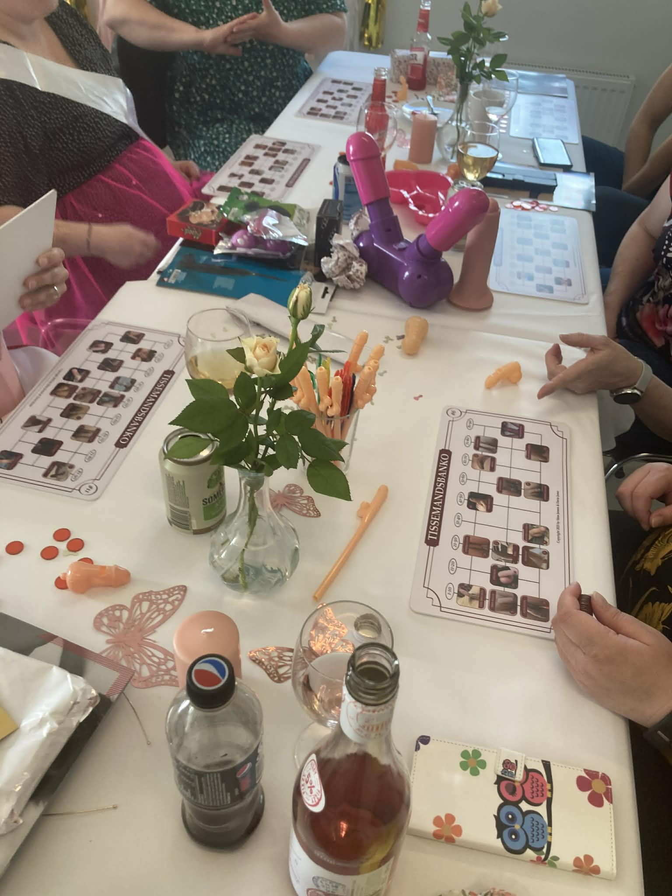

En aften I ikke vidste, I manglede
Er I klar på en aften med røde kinder, latterkramper og de der øjeblikke, hvor man lige tænker: “sagde hun virkelig det?”
Tissemands Bingo er en sjov og anderledes oplevelse til polterabender, fødselsdage og venindeaftener, hvor der er plads til grin, nærvær og lidt mere ærlige snakke.
👉 Book jeres dato her eller ring på 60421852
Jeg kommer med det hele – I skal bare være klar på grin, hygge og en aften, hvor der godt må blive lidt røde kinder.

Vi spiller banko… bare ikke helt som du kender det.
I stedet for tal får I 90 forskellige tissemænd, som bliver præsenteret én efter én.
Undervejs opstår der grin, kommentarer og de der øjeblikke, hvor ingen helt ved hvad de skal sige – og så siger nogen det alligevel.
Der er selvfølgelig præmier på spil – både det sjove og det lidt mere forkælende.
Bag Tissemands Bingo står en uddannet sexolog.
Det betyder, at aftenen ikke kun handler om at grine – men også om at skabe et trygt rum, hvor der er plads til små refleksioner og samtaler undervejs.
Varighed: ca. 2 timer
Pris: 2400 kr.
Lokation: Sjælland
Afholdes af Stine Jensen (opfinder af Tissemandsbanko)